七组同机位画面。390 × 844，固定天气、时间、衣服与路线种子。拖动图片中线查看变化。
保留 V5 风景，精修石路、灯与角色，减少字牌。
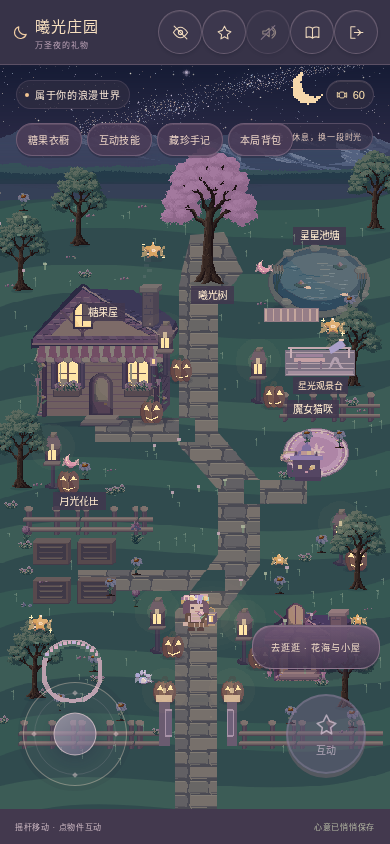
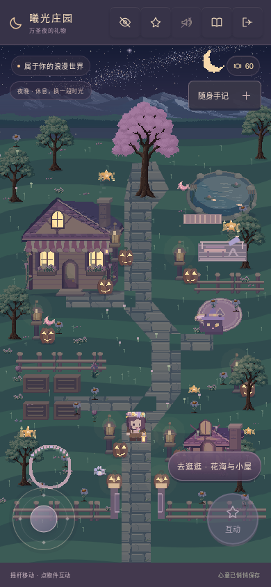
重绘柜台与花架，缩小贴地阴影，保留活动空间。
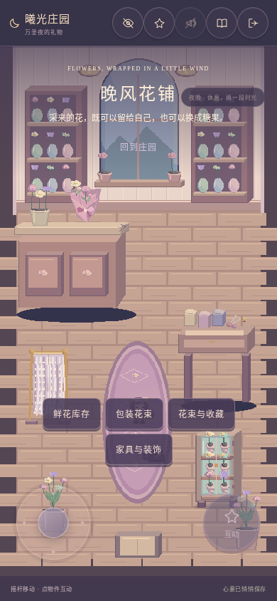
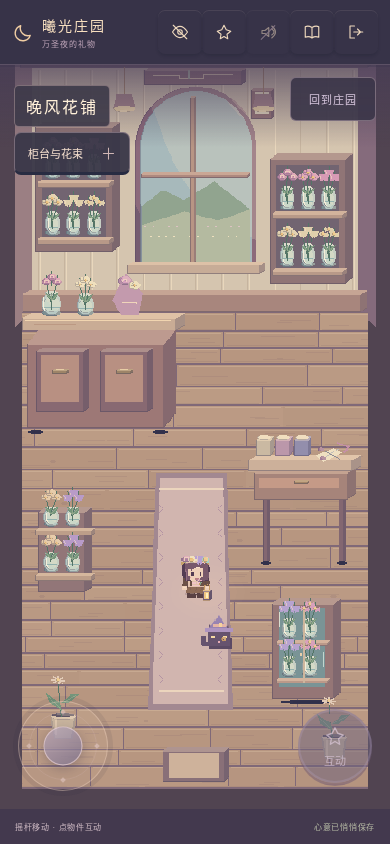
错缝破损石板、厚墙、石雕与浅积水。
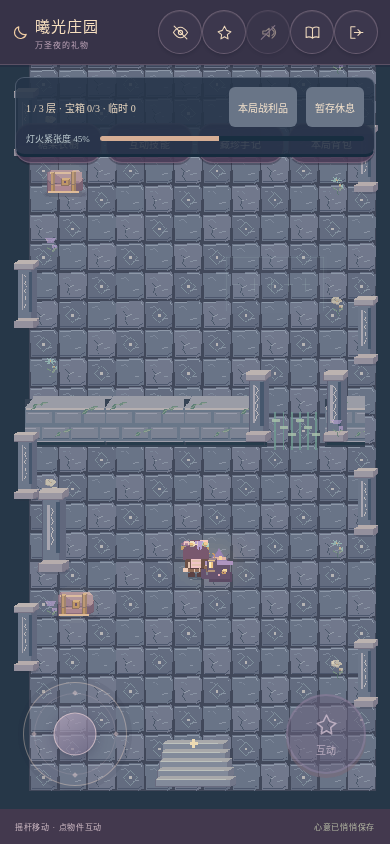
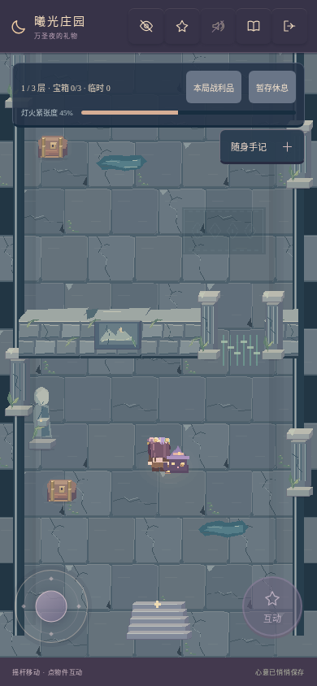
嵌墙壁画、金属包边和可读的危险光纹。
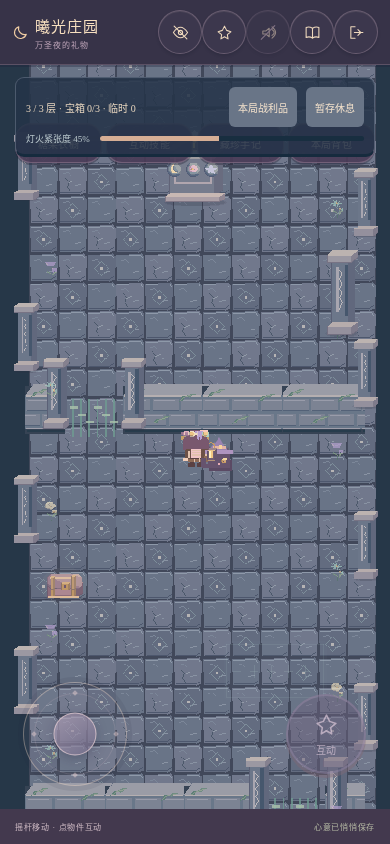
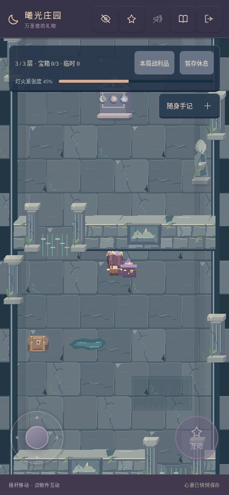
床品、帘褶、织毯与木板材质。
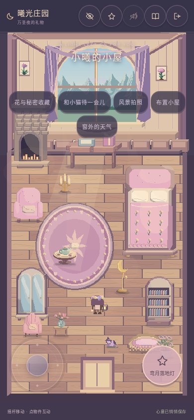
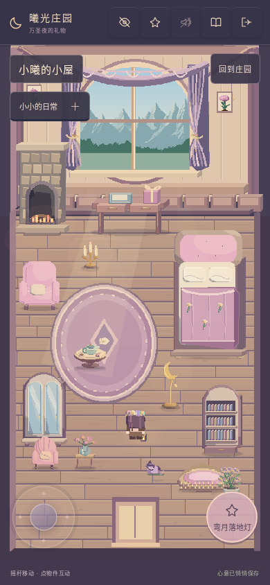
冷色环境与壁炉、灯具局部暖光。
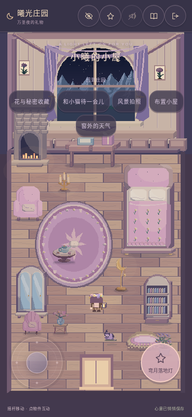
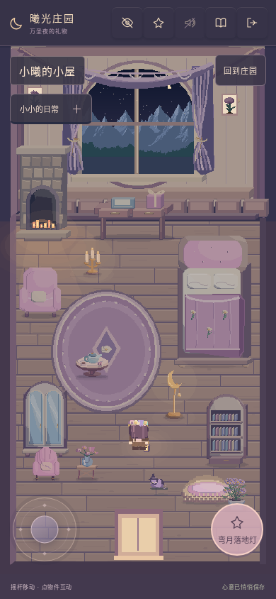
同一 2.5 倍游戏镜头，显示角色与装备的真实像素。
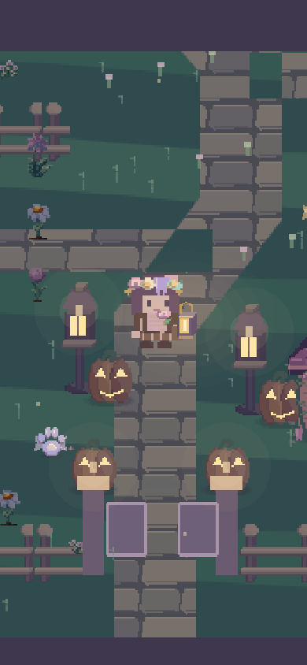
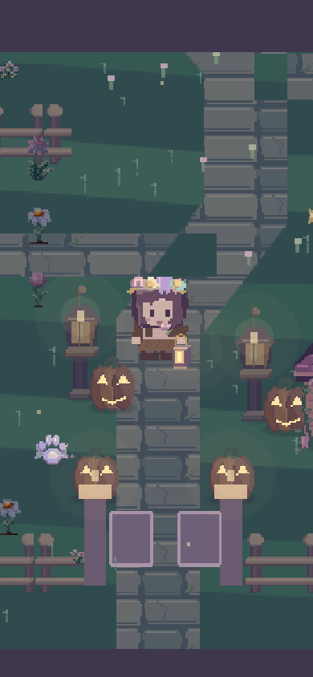
滚动后主要操作与关闭入口都在屏幕内；截图来自本地生产构建的离线浏览器。
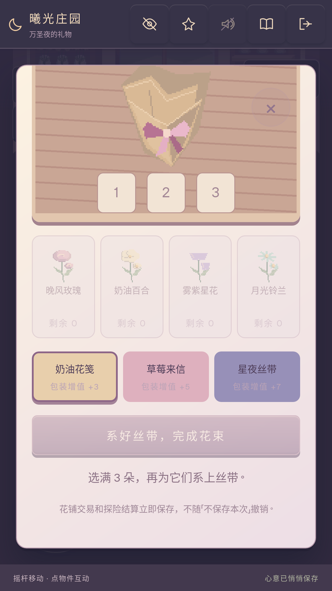
未修改经济、存档模型或极光。94 项单元测试通过；两内核完成断网游玩与存档验证。四轮场景往返，纹理数稳定为 41；新增一张约 132 KiB 的本地原创图集。性能原始样本见验证记录，实体手机仍可继续验收。